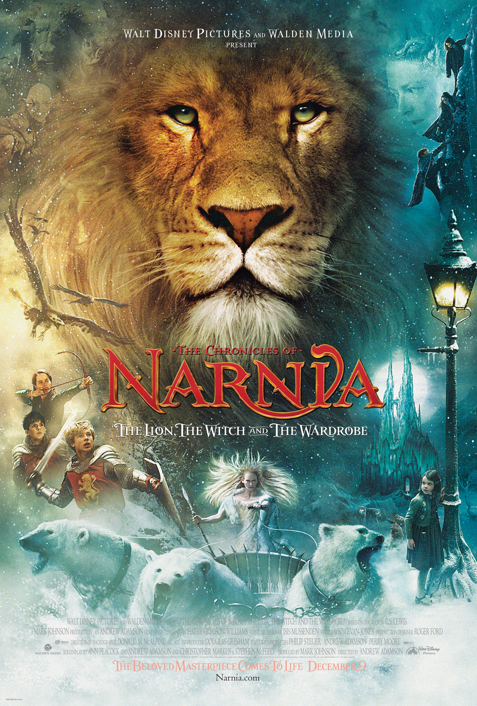

Movies Recommendation
Here are some Movies Recommendation base on my favorite Movies. But i really recommend you to watch!
- Inception
- Coco
- Narnia
Rate : 4.0/5

Description
Inception was first developed by Christopher Nolan, based on the notion of "exploring the idea of people sharing a dream space - entering a dream space and sharing a dream. That gives you the ability to access somebody’s unconscious mind. What would that be used and abused for?" Furthermore, he thought "being able to extract information from somebody’s brain would be the obvious use of that because obviously any other system where it’s computers or physical media, whatever – things that exist outside the mind – they can all be stolen ... up until this point, or up until this movie I should say, the idea that you could actually steal something from somebody’s head was impossible. So that, to me, seemed a fascinating abuse or misuse of that kind of technology". He had thought about these ideas on and off since he was 16 years old, intrigued by how he would wake up and then, while falling back into a lighter sleep, hold on to the awareness that he was dreaming, a lucid dream. He also became aware of the feeling that he could study the place and alter the events of the dream. He said, "I tried to work that idea of manipulation and management of a conscious dream being a skill that these people have. Really the script is based on those common, very basic experiences and concepts, and where can those take you? And the only outlandish idea that the film presents, really, is the existence of a technology that allows you to enter and share the same dream as someone else".
Rate : 4.5/5

Description
"Coco" is the sprightly story of a young boy who wants to be a musician and somehow finds himself communing with talking skeletons in the land of the dead. Directed by Lee Unkrich ("Toy Story 3") and veteran Pixar animator Adrian Molina, and drawing heavily on Mexican folklore and traditional designs, it has catchy music, a complex but comprehensible plot, and bits of domestic comedy and media satire. Most of the time the movie is a knockabout slapstick comedy with a "Back to the Future" feeling, staging grand action sequences and feeding audiences new plot information every few minutes, but of course, being a Pixar film, "Coco" is also building toward emotionally overwhelming moments, so stealthily that you may be surprised to find yourself wiping away a tear even though the studio has been using the sneak-attack playbook for decades.
Rate : 3.5/5
Description
Four children from the same family have to leave their town because of the bombings of WWII. A woman and a professor take the children to their house. While playing a game of hide-and-seek, the youngest member of the family, Lucy, finds a wardrobe to hide in. She travels back and back into the wardrobe and finds a place named Narnia. After going in twice, the four children go in together for the last time. They battle wolves, meet talking animals, encounter an evil white witch and meet a magnificent lion named Aslan. Will this be the end of their journey to Narnia or will they stay?